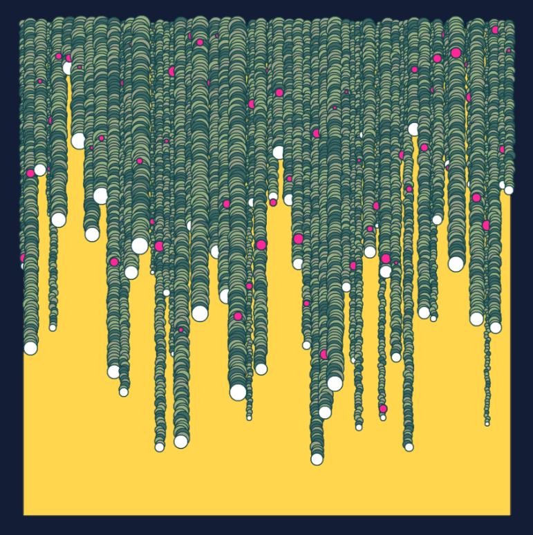
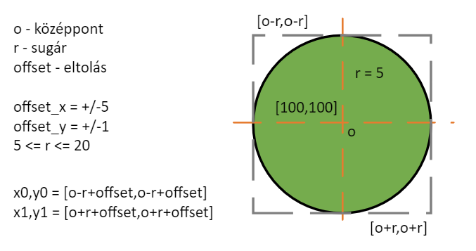

Sorokat alkotó körök#

egymást részben fedő körök sorokat alkotnak
kitöltésre több szín eltérő gyakorisággal
a sort lezáró utolsó kör más színű
a körök alkotta sorok megközelítőleg egy magasságban kezdődnek
adott sorban a körök mérete egységes, de pozíciójukban eltolás mutatkozik
minden sorhoz tartozik egy eltérő színű kör, aminek sugara jellemzően kisebb
Forrás: [5]
Szükséges könytárak telepítése és importálása#
from PIL import Image, ImageDraw
import numpy as np
import random
A körök helyzetét befolyásoló tényezők (eltolás, méret, átfedés) miatt célszerű volt a középpontot és sugár alapján meghatározni a rajzoláshoz szükséges paramétereket.

def drawEllipse(x,y,r,color):
offset_x = random.randint(-3,3)
offset_y = random.randint(-1,1)
x0 = int(x-r+offset_x)
y0 = int(y-r+offset_y)
x1 = int(x+r+offset_x)
y1 = int(y+r+offset_y)
draw.ellipse([x0,y0,x1,y1], fill=color, outline=colors[6], width=1)
A körök által kirajzolt sorok bizonyos átfedést mutatnak. Azonban az eredeti képen látható, hogy a sorrendiség okozta átfedés nem lineáris. Ebből kifolyólag az egyes sorokhoz tartozó x koordináta meghatározásához np.linspace() függvényt használjuk, ami adott intervallumon egymástól egyenlő távolságra levő, tetszőleges mennyiségű értékeket választ. Ezek az értékek fognak alapul szolgálni a külső ciklushoz.
#paraméterek
image_width = 1000
image_height = 1000
frame = 100
radius = (5,10,12,10,15,17,15,20)
colors = [(20,30,54),(255,214,77),(255,255,255),(254,39,150),(157,179,141),(36,85,84),(40,64,62)]
overlap_y = 0.45
image = Image.new("RGB", (image_width, image_height), colors[0])
draw = ImageDraw.Draw(image)
draw.rectangle([frame,frame,image_width-frame,image_height-frame],fill=colors[1])
rows = np.linspace(frame,image_width-frame,51)
random.shuffle(rows)
for row in rows:
length = random.randint(20,75)
special = random.randint(0, length-5)
r = random.choice(radius)
for j in range(0,length):
height = frame+j*r*overlap_y
if j == special:
special_y = height
if j == length-1:
drawEllipse(row,height,r,colors[2])
else:
ellipseColor = random.random()
if ellipseColor <= 0.70:
drawEllipse(row,height,r,colors[4])
else:
drawEllipse(row,height,r,colors[5])
drawEllipse(row,special_y,int(r/2),colors[3])
display(image)